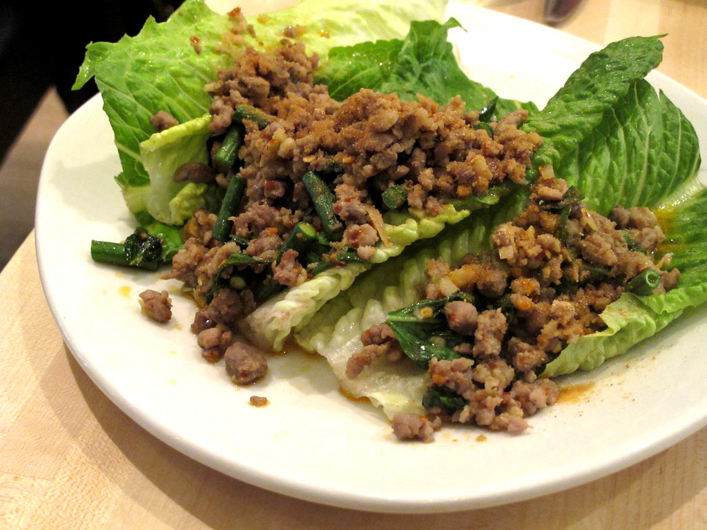

Beef Laab

This dish is also known as "Beef Salad."
Ingredients:
- 1 cup lime juice
- 1 cup chopped fresh cilantro
- 1 cup chopped fresh mint leaves
- 1/2 cup white sugar
- 1/3 cup fish sauce
- 2 chopped green onions
- 1 stalk lemongrass, smashed and cut into 1-inch pieces
- 1 tbsp sweet chili sauce
- 1.5 lbs steak fillet, 1-inch thick
- 1 head leaf lettuce, bite-size pieces
- 1/2 diced English cucumber
- 1 pt halved cherry tomatoes
Directions:
- Mix lime juice, cilantro, mint leaves, sugar, fish sauce, green onions,
lemongrass, and chili sauce together in a large bowl until sugar is dissolved.
Adjust the flavor, if desired, by adding more sugar and/or fish sauce; set aside.
- Preheat an outdoor grill for high heat and lighty oil the grate.
- Cook steak on the preheated grill until it begins to firm and is hot and slightly
pink in the center, about 4 to 6 minutes per side.
An instant-read thermometer into the center should read 140 degrees F (60 degrees C).
- Transfer steak to a chopping board and slice into thin strips.
Add steak and its juices into the bowl with herb mixture.
Cover and refrigerate for at least 3 hours.
- Place lettuce in a salad bowl; arrange cucumber on top.
Add steak and pour the herb mixture on top.
Scatter cherry tomatoes over salad and garnish with fresh cilantro.
Recipe Source
Back to Home